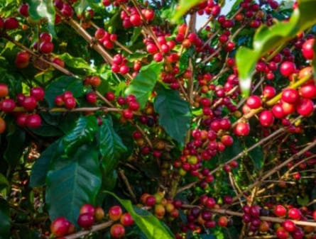
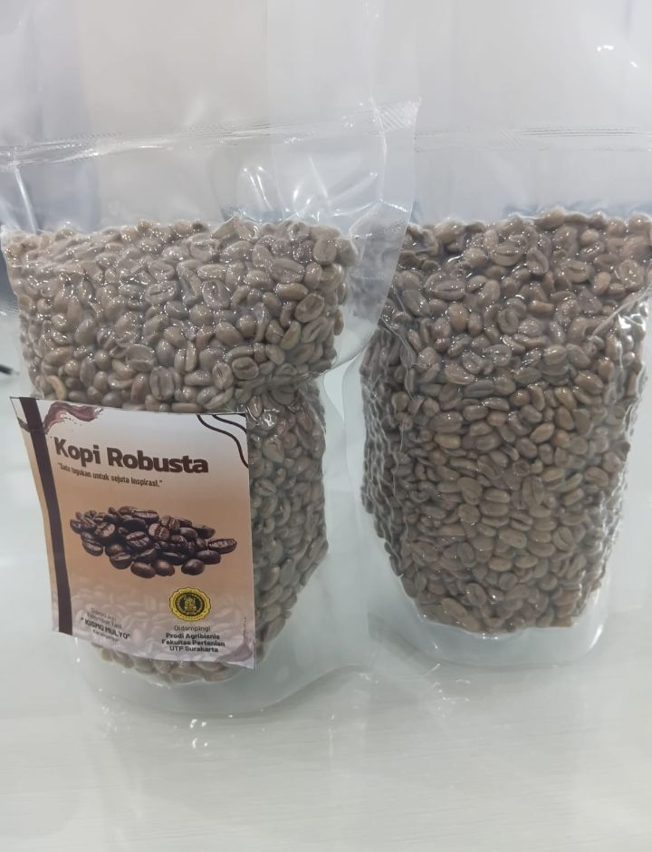

Internal Control System Digital
(ICS-D)
(ICS-D)
(KELOMPOK TANI KOPI "KISMO MULYO")
Platform digital terpadu untuk pengimputan data daan pengendalian mutu di tingkat kelompok tani.
Info Selengkapnya
Platform digital terpadu untuk pengimputan data daan pengendalian mutu di tingkat kelompok tani.
Info SelengkapnyaKELOMPOK TANI "KISMO MULYO", Berlokasi di Desa Kwangsan, Kecamatan Jumangpolo, Kabupaten Karanganyar, menjadi wadah kerjasama, meningkatkan hasil panen kopi jenis Robusta, memperkuat posisi tawar harga jual, serta memperluas akses pasar dan bagi para petani kopi yang mendukung. Dengan menerapkan praktik dengan konsep pertanian hijau (green agriculture) dan ekonomi hijau (green economy) bertujuan untuk menerapkan praktik budidaya kopi yang ramah lingkungan, menjadi kelestarian ekosistem hutan, serta meningkatkan kesejahteraan ekonomi petani secara berkelanjutan.

Untuk pertanyaan, saran, atau bantuan teknis terkait sistem monitoring pertanian, silakan hubungi kami melalui informasi di bawah ini.